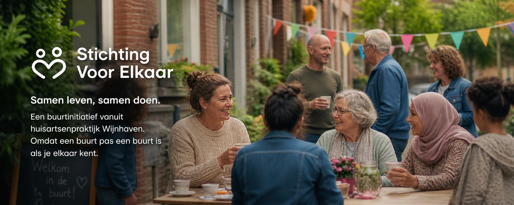

In onze spreekkamer komen verhalen langs die we niet met een recept oplossen. De buurman die niemand meer ziet sinds zijn vrouw overleed. De moeder die door een burn-out thuiszit en haar dagen niet gevuld krijgt. Wat dan helpt? Een gesprek, een wandeling, iemand die langskomt. Soms doet dat meer dan wat wij vanuit de praktijk kunnen geven.
Onze visie is simpel: in deze wijk hoort iedereen erbij. Rotterdammers zijn nuchter en pakken aan, en daar willen we op bouwen. Een 90-plusser heeft levenservaring die anderen verder helpt. Iemand die thuiszit heeft tijd en aandacht te geven. Dat brengen we bij elkaar.
Bij Stichting Voor Elkaar doen we het samen, vanuit de praktijk en mét de buurt.

Meedoen gaat via de Samen-app. U meldt zich aan, ziet welke activiteiten er in de buurt zijn en legt contact met buurtgenoten. Eén tik en u zit erbij: bij een wandeling, een koffiemoment of een klusje samen. De app brengt u op weg. Het echte contact gebeurt buiten, aan tafel, op straat of bij iemand thuis.
Open de Samen-appOp uw telefoon zetten? Open samen-app.nl in Safari (iPhone) of Chrome (Android) en kies "Voeg toe aan beginscherm". De app komt dan als icoon op uw startscherm te staan, net als een gewone app.

Rondom de Wijnhaven zijn we gestart. We zoeken de eerste deelnemers: buurtbewoners die graag helpen, ouderen die nieuwe gezichten willen leren kennen, en iedereen die tijd over heeft en iets wil betekenen.
Meedoen als buurtgenootEen sterke buurt bouwen we samen met lokale ondernemers. We zoeken horecazaken die een veilige ontmoetingsplek willen bieden en organisaties die hun (bestaande) activiteiten willen openstellen voor onze deelnemers. Laat zien dat uw zaak midden in de maatschappij staat.
Meedoen als buurtbedrijf